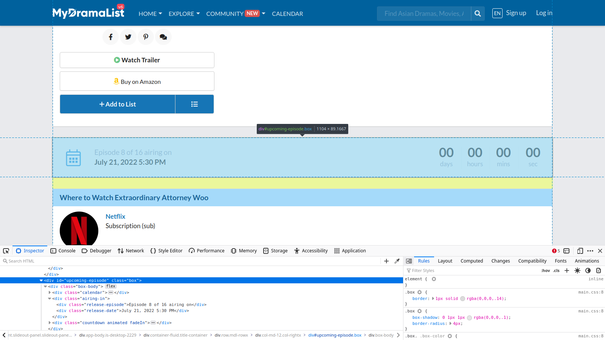
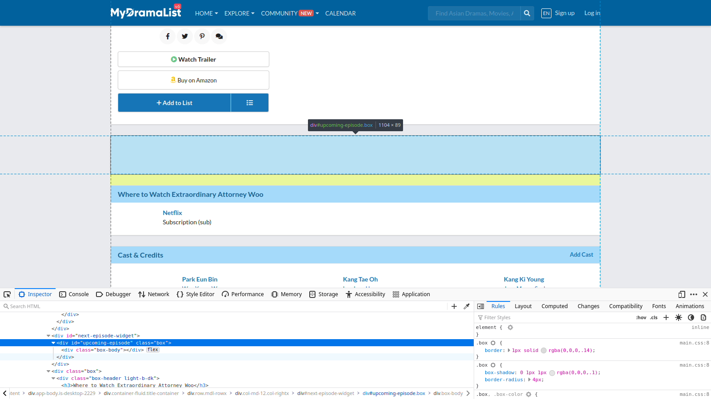

How to fetch an element by class or id using go's `html` package
Contents
Problem
How do you fetch an html element by class or id using go’s html package?
Solution
Let’s say you want to fetch an element with the id upcoming-episode from https://mydramalist.com/705723-strange-lawyer-woo-young-woo
There are two ways to do this:
1. Using tokenizer
Tokenizer allows you to get the element you want while go is parsing the html.
Here’s how you can do it with the tokenizer
|
|
Above example is a modified version of the example shown in the official docs
Output
|
|
2. Using parser
Parser parses the html into a tree first. You can then go through the tree to get the element you want.
|
|
Above example is a modified version of the example shown in the official docs
Gotchas
- When you are using the tokenizer, you need to follow the right call sequence
Tokenizer has a kind of funny interface, and you aren’t allowed to call
Token()more than once between calls toNext(). As the doc says:In EBNF notation, the valid call sequence per token is:
Next {Raw} [ Token | Text | TagName {TagAttr} ]Which is to say: after calling Next() you may call Raw() zero or more times; then you can either:
- Call
Token()once,- Call
Text()once,- Call
TagName()once followed byTagAttr()zero or more times (presumably, either not at all because you don’t care about the attributes, or enough times to retrieve all of the attributes).- Or do nothing (maybe you’re skipping tokens).
The results of calling things out of sequence are undefined, because the methods modify internal state — they’re not pure accessors. In your first snippet you call
Token()multiple times between calls toNext(), so the result is invalid. All of the attributes are consumed by the first call, and aren’t returned by the later ones.
https://stackoverflow.com/a/73032012/6874596
- HTML response won’t have all the html elements that you see in the browser
If you haven’t noticed it yet, the HTML Id upcoming-episode points to the following div in the browser:

As you can see the div with the id upcoming-episode has many children under it but if you see the output of the tokenizer of parser program above, it doesn’t show any children. This is because the children are created dynamically using Javascript.
This is what the page looks like without Javascript (I temporarily disabled Javascript in my browser. Check this for how to do it): 
You might want to use a headless browser package like chromedp to fetch the same response as the browser.